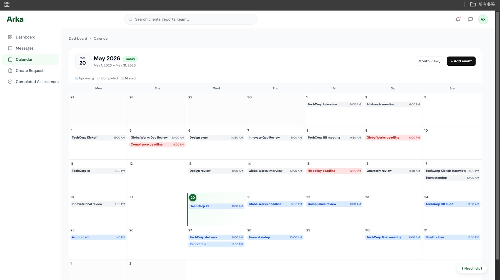
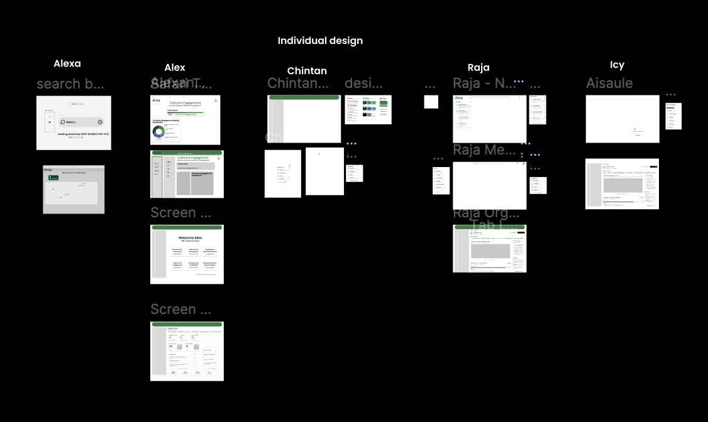
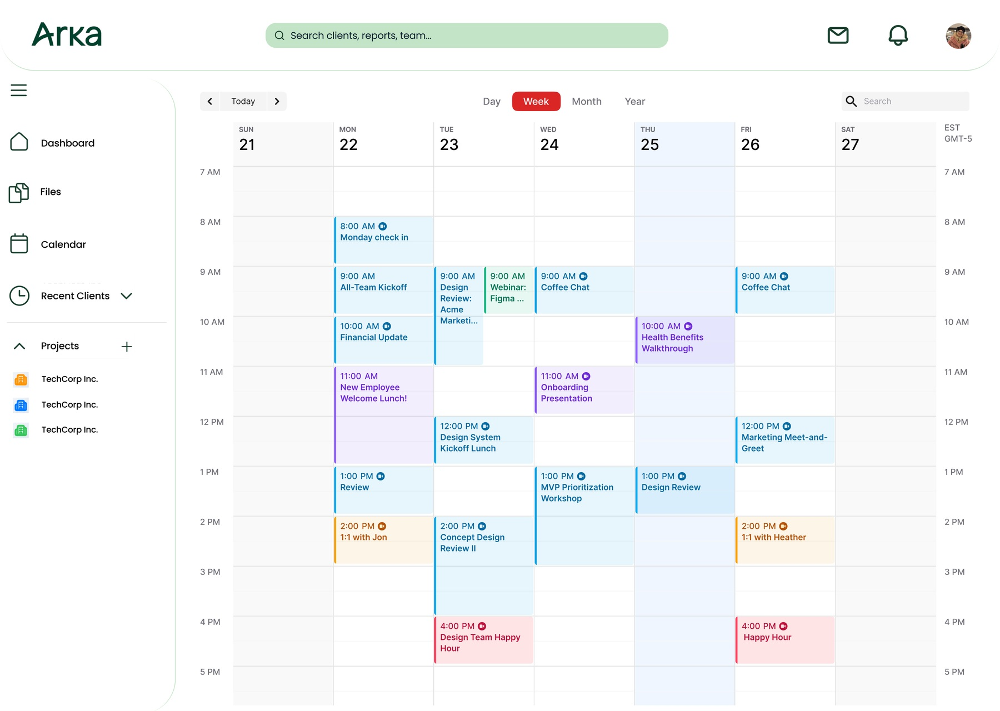
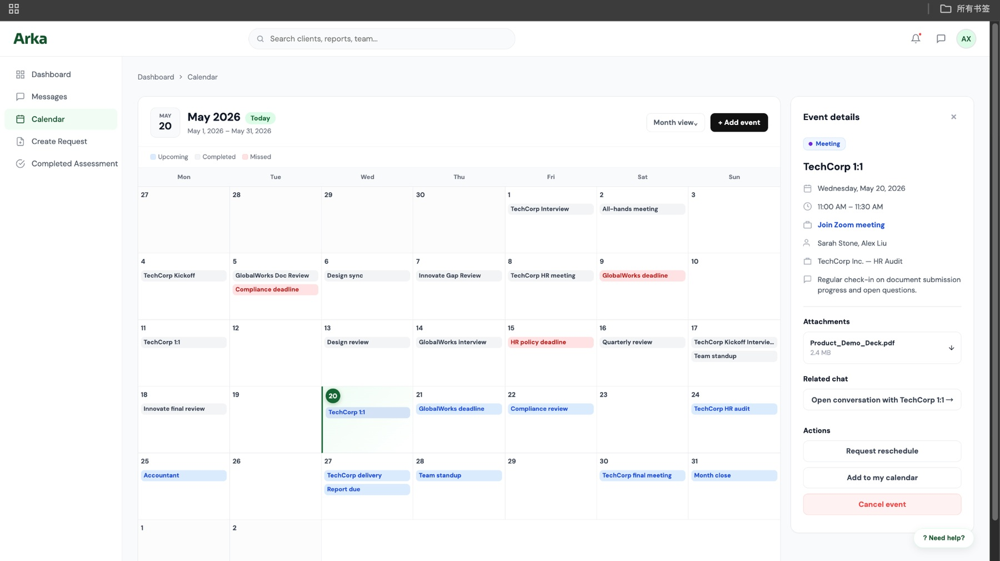
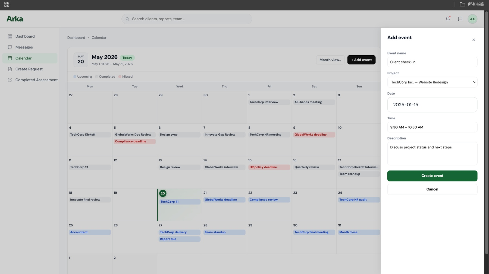
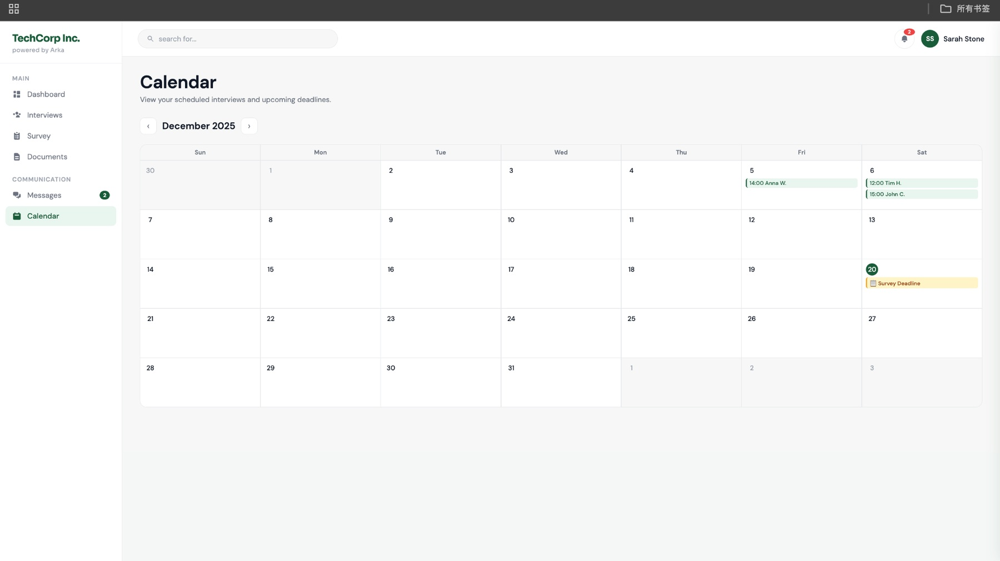

Client-Sponsored Capstone Project
ARKA HR
Building on an inherited product prototype, I designed the missing scheduling module and shaped it into a workflow-centered calendar system for an HR management platform.

Project Overview
Defining a missing module within an existing product system
ARKA HR is an HR management platform designed to support consultants and clients through hiring, documentation, communication, and project coordination. Our team inherited an existing Figma prototype from a previous project group. Most core pages had already been drafted, but the calendar module was still undefined.
Since scheduling is essential to an HR workflow, I focused on designing a calendar experience that could support ARKA’s broader product flow rather than functioning as a generic date-tracking tool.

Inherited Figma context and early individual design explorations.
My Role
Designing the calendar as a workflow hub
I led the design of the calendar-centered workflow, including the admin calendar, client calendar, event detail panel, add-event flow, and the connections between events, meetings, attachments, related chats, and follow-up actions.
I also translated selected Figma screens into responsive HTML, CSS, and JavaScript for the interactive demo.
Challenge
What should “calendar” mean inside ARKA?
A basic calendar could show dates and events, but ARKA needed something more connected to its workflow. Events needed to relate to client projects, interviews, document requests, meetings, deadlines, and communication.
The goal was to create a scheduling experience that helped users understand what needed attention and move into the next action quickly.
Research & References
Learning from familiar scheduling tools
To understand how different scheduling systems support work, I reviewed patterns from tools such as Microsoft Teams, Outlook Calendar, Calendly, and Northeastern’s calendar experience.
I compared how these tools handled event creation, meeting details, status visibility, calendar views, and action entry points. This helped me identify what should stay familiar, what needed stronger context, and how ARKA’s calendar could serve the platform’s HR-specific workflow.

Early calendar exploration before the workflow was simplified and reorganized.

Design Direction
A platform-native scheduling layer, not a generic calendar
For the admin side, I created a monthly calendar view with event status indicators, project-related events, deadline visibility, and a right-side detail panel. The detail panel brings together meeting information, attachments, related chat, and key actions such as rescheduling or adding the event to a personal calendar.
For the client side, I simplified the experience so clients could view interviews, deadlines, and important dates without seeing the full complexity of the admin workflow.

Final Solution
Connecting events, context, and follow-up actions
The final design includes an admin calendar view for managing meetings, deadlines, and project-related events; an event detail panel connecting event information with attachments, related chat, and follow-up actions; an add-event drawer that lets users create events without leaving the calendar context; and a client calendar view focused on scheduled interviews and upcoming deadlines.
This structure allows the calendar to support ARKA’s workflow while remaining familiar to users who already understand common calendar tools.

Future Integration
Designed with external calendar tools in mind
In the future, ARKA may integrate with existing calendar tools such as Outlook or Teams, depending on the client’s workplace system. The current design serves as a platform-native scheduling layer that can later connect with external calendar tools.
Outcome
Turning an undefined feature area into a structured workflow
This project helped turn an undefined feature area into a structured scheduling workflow. It also strengthened my ability to build on an existing product system, identify missing workflow logic, and design interfaces that connect product features rather than treating each page as an isolated screen.